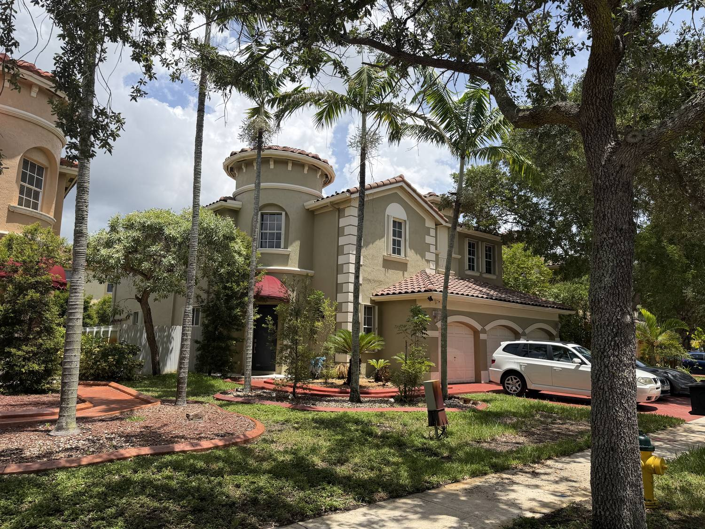
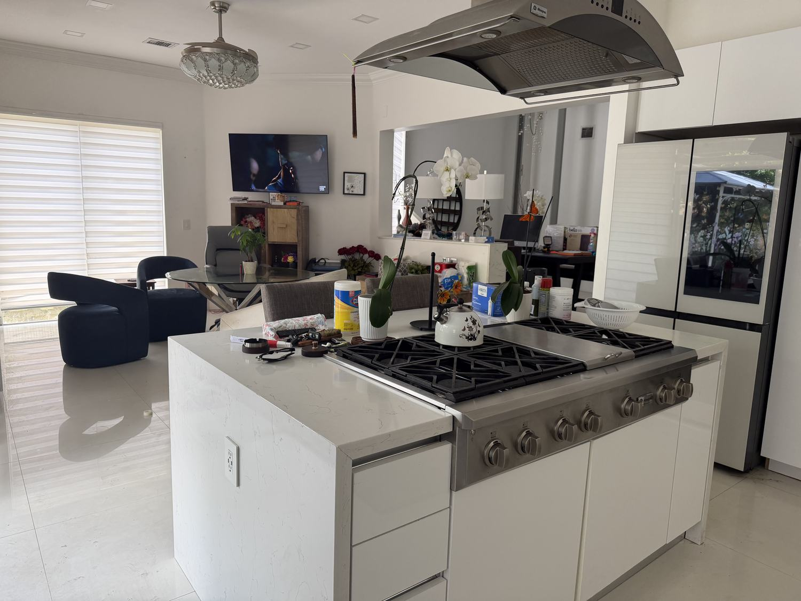

Clubhouse
A gathering space for birthdays, holidays and the meetings you would rather not host at your dining table.
Miramar · Broward County · Florida 33027
An executive residence inside a gated, full-amenity community — set at the exact center of South Florida, with Miami on one side and Fort Lauderdale on the other.
14061 SW 54th Street
Most families looking in West Broward end up compromising — on bedrooms, on parking, on stairs, or on the community. This residence was built for people who would rather not. Six bedrooms and four and a half baths across 3,315 square feet, a three-car garage, a first-floor bedroom for guests or family, and a private elevator connecting both levels.
Walk through it




The difference
A private residential elevator is the rarest thing on this street — and the one feature that changes who a two-story house works for.
Gated · Patrolled · Full amenity
The residence sits inside a guarded, gated enclave where the amenities are already built, already maintained, and already paid into — so your weekends start at the clubhouse instead of the hardware store.
A gathering space for birthdays, holidays and the meetings you would rather not host at your dining table.
A resident gym inside the gates. No membership to negotiate, no drive, no excuse.
A resort-style pool deck that somebody else cleans, tests and services every single week.
Controlled access and roving security — the reason parents here let the bikes out after dinner.
Manicured common areas, lakes and walking paths kept to a standard the whole street benefits from.
West Broward's school assignments are a core reason families relocate here. Verify current zoning with Broward County Public Schools.
Dead center of South Florida
This is the geographic advantage people move to West Broward for: I-75 and Florida's Turnpike within reach, two international airports on either side, and Miami-Dade employment without Miami-Dade living.
Miramar Park of Commerce is one of South Florida's largest business parks — roughly 5 million square feet and well over 150 companies, including GE, Siemens, Humana, Quest Diagnostics, Nissan, Toyota, Stanley Black & Decker and Tommy Hilfiger.
Fort Lauderdale-Hollywood International to the northeast, Miami International to the southeast. Whichever fare is cheaper that week, you can take it.
Doral, Medley logistics, Miami Lakes, Brickell, Sawgrass, Weston's corporate parks, Port Everglades and the FLL aviation corridor are all reachable from this driveway.
The reason people never leave
Winter here is a rumor. Whatever you love doing outdoors, the season for it is right now — and the launch point is your driveway.
Trailer down to Dania, Hollywood or Fort Lauderdale in under half an hour and be on the Intracoastal by mid-morning. Sandbars at Haulover, sportfishing off the reef line, marinas and dry storage all along the coast, and Biscayne Bay to the south when you want a longer run.
Dolphins football, the Miami Open and Formula 1 race weekend at Hard Rock Stadium. Heat basketball downtown, Marlins baseball at loanDepot Park, Panthers hockey in Sunrise. Plus Miramar Regional Park's fields, courts and aquatic complex ten minutes away.
Markham Park, Quiet Waters and C.B. Smith for weekend campouts, mountain-bike trails and cable-ski. Push west into Everglades National Park and Big Cypress for real backcountry — airboats, sawgrass, and a night sky you cannot see from the coast.
Southwest Ranches and Davie keep South Florida's horse country alive minutes from here — boarding, lessons and bridle paths. Tradewinds Park has a working stable, and the levee and greenway trails run for miles when you would rather be on two wheels.
Pembroke Gardens and Pembroke Lakes Mall for the everyday, Sawgrass Mills for the marathon, Las Olas Boulevard and Wynwood when the night calls for something better than everyday.
No state income tax, no snow, and a calendar where January afternoons are for the pool deck. It is not a vacation you fly to — it is the ordinary Tuesday you come home to.
Straight talk · Sin rodeos
You are not simply buying a large house in Miramar. You are buying position, space, and a level of daily convenience that the rest of this market makes you choose between. At 14061 SW 54th Street you stop choosing. Six bedrooms. Four and a half baths. More than 3,300 living square feet. A three-car garage. And a private elevator that almost no competing home on your list is going to have.
Walk in and you will feel that this house already understands how your family actually lives. The kitchen opens to the family room, so nobody gets exiled while you cook. The bedrooms give everyone real privacy. The first-floor bedroom solves your guest problem — or your in-law problem — on day one. And the elevator means the second floor never becomes off-limits to anyone you love, no matter what the next twenty years bring.
Step outside and the community is already built for you: guarded gates, a clubhouse, a fitness center, a resort pool, patrolled streets and maintained grounds. You are not funding somebody's future amenity plan. You are moving into one that works this weekend.
Then there is the map, which is the part people underestimate. You sit at the center of South Florida. Miramar Park of Commerce and its Fortune 500 tenants are ten minutes out. Weston, Miami Lakes, Doral and Fort Lauderdale are a short drive in four different directions. Two international airports frame you. I-75 and the Turnpike put Brickell, the beaches, the Everglades and the marinas inside an easy afternoon. Your commute options multiply, and your resale story stays strong, because this address sits directly in the growth path — not at the edge of it.
Here is the honest math on urgency. Six-bedroom homes are scarce. Three-car garages are scarcer. Gated communities with full amenities are competitive. A house that has all three and a private elevator is not a category — it is a handful of properties across the entire county. When one of them is available, the people who move on it are the people who toured it first.
Message me. Tell me when you can walk it. I will hold the time.
Usted no está comprando solamente una casa grande en Miramar. Está comprando ubicación, espacio y un nivel de comodidad diaria que el resto del mercado lo obliga a sacrificar. En el 14061 SW 54th Street usted deja de sacrificar. Seis habitaciones. Cuatro baños y medio. Más de 3,300 pies cuadrados habitables. Garaje para tres carros. Y un elevador privado que casi ninguna otra casa en su lista va a tener.
Entre y va a sentir que esta casa ya entiende cómo vive su familia de verdad. La cocina se abre al family room, así que nadie queda aislado mientras usted cocina. Las habitaciones ofrecen privacidad real. La habitación en el primer piso le resuelve el tema de las visitas — o el de los suegros — desde el primer día. Y el elevador significa que el segundo piso nunca queda prohibido para nadie a quien usted quiere, sin importar lo que traigan los próximos veinte años.
Salga y la comunidad ya está construida para usted: portón con seguridad, clubhouse, gimnasio, piscina estilo resort, patrullaje y áreas comunes mantenidas. Usted no está financiando el plan de amenidades de alguien más. Se está mudando a uno que ya funciona este fin de semana.
Y después está el mapa, que es la parte que la gente subestima. Usted queda en el centro del sur de la Florida. El Miramar Park of Commerce y sus empresas Fortune 500 están a diez minutos. Weston, Miami Lakes, Doral y Fort Lauderdale quedan a poca distancia en cuatro direcciones distintas. Dos aeropuertos internacionales lo rodean. La I-75 y el Turnpike ponen Brickell, las playas, los Everglades y las marinas dentro de una tarde tranquila. Sus opciones de trabajo se multiplican y su historia de reventa se mantiene fuerte, porque esta dirección está justo en el camino del crecimiento, no en la orilla.
Aquí está la matemática honesta de la urgencia. Las casas de seis habitaciones son escasas. Los garajes de tres carros lo son más. Las comunidades cerradas con amenidades completas son competidas. Una casa que tiene las tres cosas y además un elevador privado no es una categoría — son un puñado de propiedades en todo el condado. Cuando una está disponible, quien se la queda es quien la visitó primero.
Escríbame. Dígame cuándo puede verla. Yo le reservo el horario.
Private showings by appointment
Send a message with the days that work and I will confirm a showing window for 14061 SW 54th Street. Questions about the elevator, the community, the schools, HOA details or the buying process — ask, and you will get a straight answer. Se habla español.
Las Olas Realty and Management LLC · Miramar · Broward & Miami-Dade